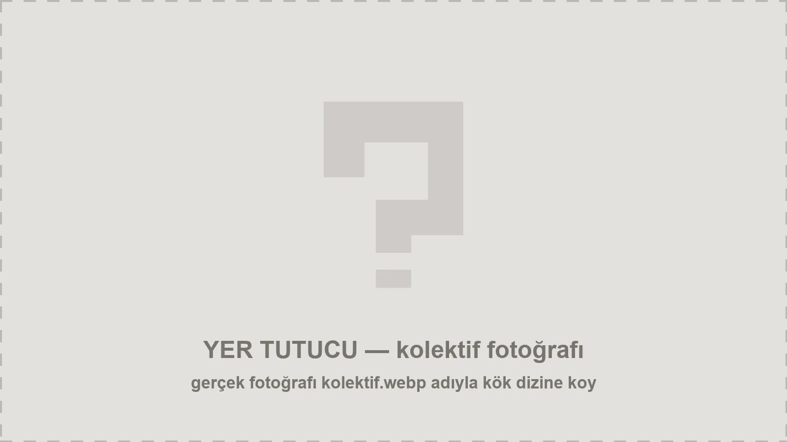
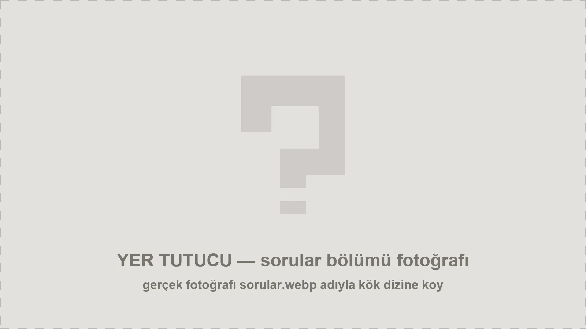
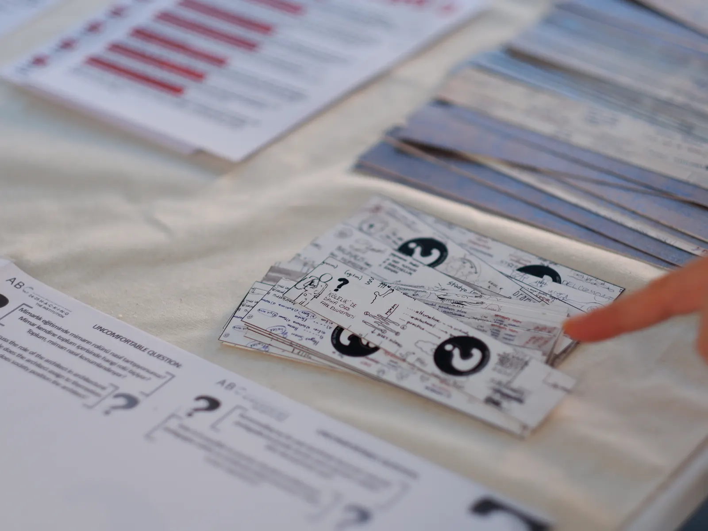
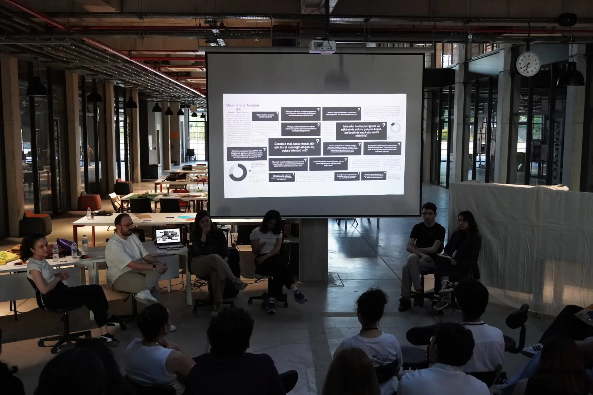
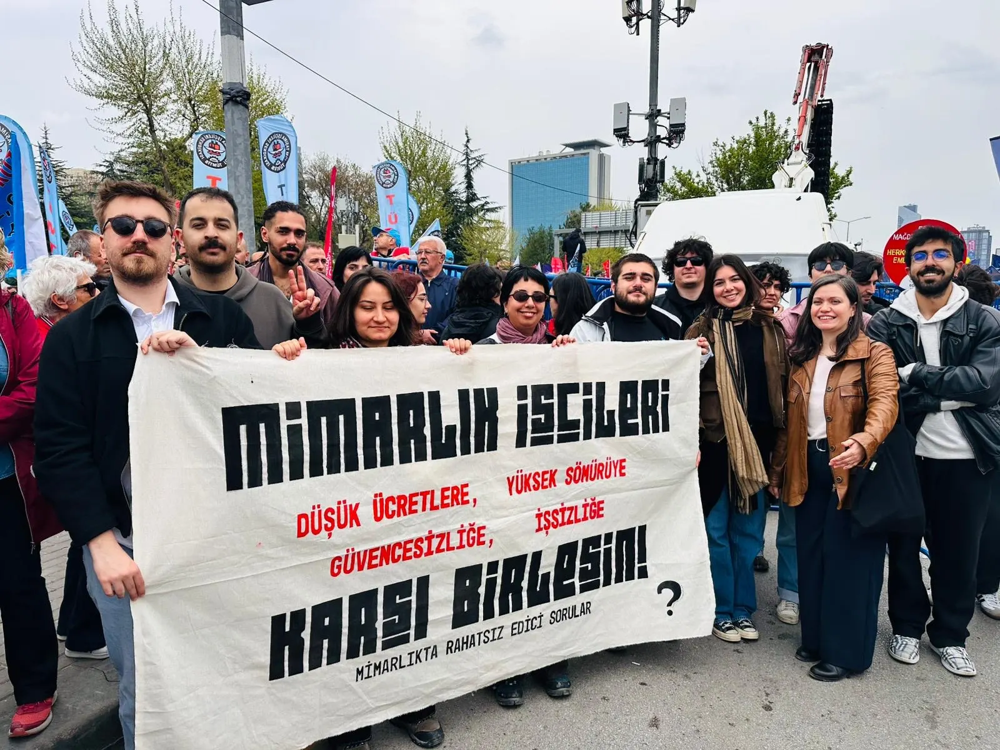
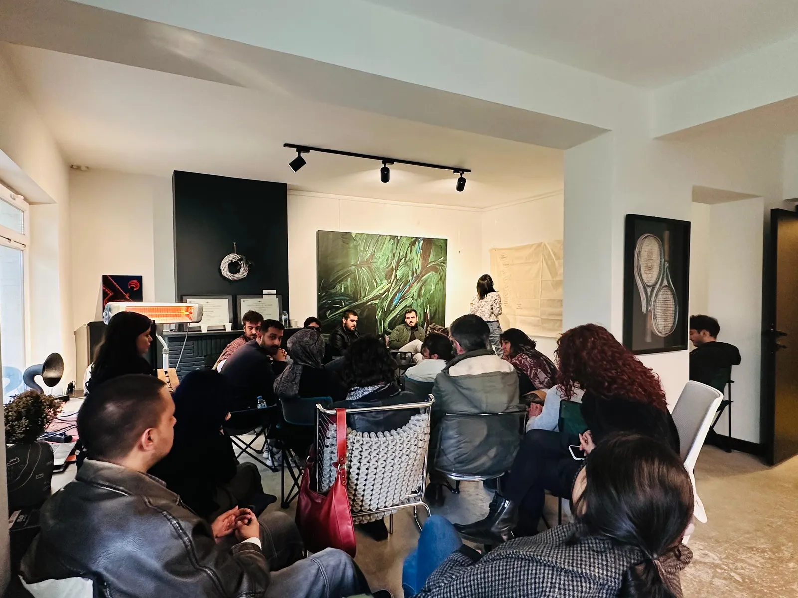
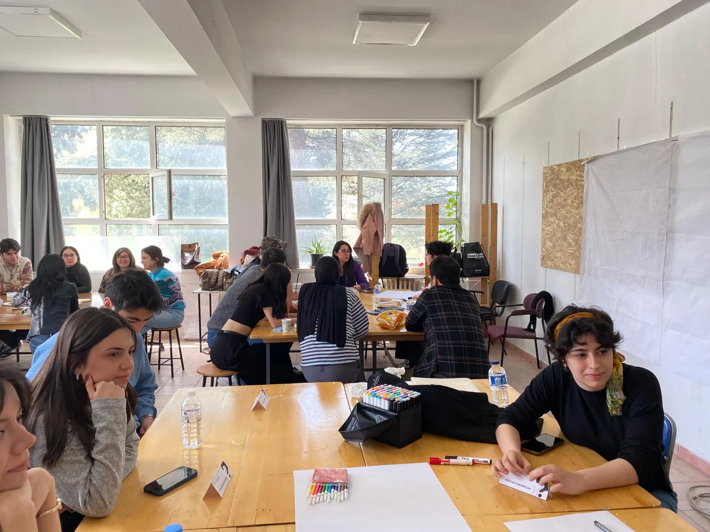

2024 Ankara bağımsız kolektif
Mimarlıkta
Rahatsız Edici Sorular

about
Mimarlıkta Rahatsız Edici Sorular, 2024’te Ankara’da kurulan bağımsız bir kolektiftir. Öğrenciler, akademisyenler ve mimarlık işçileri; hem eğitim hem meslek pratiklerinde karşılaşılan yapısal eşitsizlikleri, emek rejimlerini ve pedagojik tıkanıklıkları birlikte ele alıyor. Mimarlığı yalnızca teknik bir üretim biçimi olarak değil, hem işçi-özne olarak mimarın konumunu hem de yapılı çevrenin dinamiklerini açan politik bir eylem alanı olarak görüyoruz. Sistematik eşitsizliklerin ancak bu üçlü yapının birlikte örgütlenmesiyle aşılabileceğine inanıyoruz. Hiyerarşiyi reddeden yatay bir örgütlenme modelini benimsiyor, gönüllülük esasına dayalı çalışıyoruz.
Mimarlıkta Rahatsız Edici Sorular, 2024’te Ankara’da kuruldu. Bağımsız bir kolektif. Üyelik yok, aidat yok, hiyerarşi yok. Toplantılar açık, üretimler kolektif, kararlar yatay alınır. Mimarlık eğitiminde ve meslekte sessiz kalınan ne varsa konuşulmaya değer; disiplinin “rahat” alanlarında dönüştürücü tartışma zeminleri açıyoruz. Mimarlığın nasıl yapıldığını, kimin emeğiyle inşa edildiğini, kimin adıyla anıldığını sorguluyoruz. Sen de bir öğrenciysen, akademisyensen, mimarlık işçisiysen buradasın. Yukarıdaki sorulara bir tane daha ekle. Listeyi büyütelim.
Temalar
Çalışmalarımız beş ana tema etrafında şekilleniyor. Her tema, disiplinin sessiz kaldığı bir noktaya açılan tartışma kapısıdır.

32 rahatsız edici soru
2024 yılında sorduğumuz rahatsız edici sorular
| Tema | Soru | No |
|---|---|---|
| Mimarlık ve Pedagoji | "Mimar" kimdir? Mimarların ve mimarlığın rolü nedir? | 01 |
| Stüdyo Kültürü | Mimarlar hep inşa mı eder? | 02 |
| Müfredat Teşhiri | Mimarlık tasarım stüdyolarında tasarım sürecini, ya da yapmama/inşa etmeme seçeneklerini konuşuyor muyuz? | 03 |
| Sınıf ve Emek | Bilgi üretmenin ya da aktarmanın bazı biçimlerinin doğru olmadığını biliyor olduğunuzda ne yaparsınız? | 04 |
| Toplumsal Cinsiyet | Mimarlık üretimi ve eğitimi sırasında doğru olmadığını düşündüğünüz yöntemler var mı? Varsa bunlara karşı ne yapılabileceğini düşünüyorsunuz? | 05 |
| Mimarlık ve Pedagoji | Ne kadar maaş alıyorsunuz? Hak ettiğiniz ücreti aldığınızı düşünüyor musunuz? | 06 |
| Stüdyo Kültürü | Günde kaç saat mesai yapıyorsunuz? Ne sıklıkla fazla mesaiye kalıyorsunuz? | 07 |
| Müfredat Teşhiri | Çalışma süreniz ve iş tanımınızdan emin misiniz? | 08 |
| Sınıf ve Emek | Bursiyer ile asistan pozisyonları arasında ne fark vardır? İş tanımları eşitlenebilir mi? | 09 |
| Toplumsal Cinsiyet | Araştırma asistanı ile eğitim asistanı arasında ne fark vardır? İş tanımları eşitlenebilir mi? | 10 |
| Mimarlık ve Pedagoji | Üniversitelerde akademik personelin büyük kısmını yarı zamanlı öğretim üyelerinden oluşturmak yönünde bir politika uygulandığını düşünüyor musunuz? | 11 |
| Stüdyo Kültürü | Akademik araştırma yürütmek için gerekli zaman ve gelire sahip misiniz? | 12 |
| Müfredat Teşhiri | Çalışma yaşantınızda görülmeyen ve ücretsiz emeğe ne oranda tanık oldunuz? | 13 |
| Sınıf ve Emek | Çalışma yaşantınızla ilgili kararlar konusunda otoritenin size ait olduğuna inanıyor musunuz? Otoritenizin sınırları nerede başlayıp bitiyor? | 14 |
| Toplumsal Cinsiyet | Prekaryanın sizin için anlamı nedir? | 15 |
| Mimarlık ve Pedagoji | Yaratıcılığın sizin için anlamı nedir? | 16 |
| Stüdyo Kültürü | Çalıştığınız yer maaş, ikramiye ve terfi konularında transparan mı? | 17 |
| Müfredat Teşhiri | Mimarlık eğitiminde ya da çalışma hayatında travmatik tecrübeleriniz var mı? | 18 |
| Sınıf ve Emek | Çalıştığınız yerde bir meseleyle ilgili toplum içinde konuşmaktan misilleme ya da şantaj korkusuyla kaçındığınız oldu mu? | 19 |
| Toplumsal Cinsiyet | Çalışma alanınızda konuşma ve ifade özgürlüğü olduğunu düşünüyor musunuz? | 20 |
| Mimarlık ve Pedagoji | Çalıştığınız yerde örgütlenme konusunda gerekli bilgi ve platformların erişilebilir olduğunu düşünüyor musunuz? | 21 |
| Stüdyo Kültürü | Sizce kiminle ve nasıl örgütlenebiliriz? | 22 |
| Müfredat Teşhiri | Mimarlıkta işleyen tasarım süreçleri, etik ve çalışma koşulları üzerinde nasıl söz sahibi olabiliriz? | 23 |
| Sınıf ve Emek | Materyaller için belirlediğimiz gerekli koşulları neden emek için de tanımlamıyoruz? | 24 |
| Toplumsal Cinsiyet | Profesyonel pratik ve akademik alan birbirinden bağımsız mıdır? | 25 |
| Mimarlık ve Pedagoji | Mekan üretimine odaklanan ekonomik sistem mimarlık pratiğini nasıl etkiliyor? | 26 |
| Stüdyo Kültürü | Mevcut sistem ile mimarlık eğitim müfredatı arasındaki ilişki nedir? | 27 |
| Müfredat Teşhiri | Mevcut mimarlık müfredatının üretim süreçlerini, inşa emeğini ve şantiye alanlarını da dikkate aldığını düşünüyor musunuz? | 28 |
| Sınıf ve Emek | Mimarlık pedagojisinin değişmesi, mimarlığın üretim biçimlerini nasıl değiştirirdi? | 29 |
| Toplumsal Cinsiyet | Derslik ve stüdyoları kamuya açık eleştirel mekanlara dönüştürebilir miyiz? | 30 |
| Mimarlık ve Pedagoji | Mekanla, kendimizle ve birbirimizle olan bağlarımızı nasıl görünür kılabiliriz? | 31 |
| Stüdyo Kültürü | Eğer emek, yapma biçimleri, bilgi birikimi ve inşa sürecinin kendisi merkeze alınırsa, mimarlık ve tasarım alanlarının bilgisi ve pratikleri nasıl dönüşür? | 32 |
Manifesto
Bu manifesto bir sonuç değil, sürekli güncellenen bir başlangıç.
Mimarlıkta Rahatsız Edici Sorular (UQA), mimarlığın sterilleştirilmiş alanlarından, pürüzsüz tasarım yüzeylerinden ve kurumsal sessizliğinden duyulan rahatsızlıktan doğmuştur. Bu rahatsızlık, sadece bireysel bir duygu değil; gücün kimde toplandığını, emeğin nasıl görünmez kılındığını ve hangi normların bize “doğal” olarak sunulduğunu anlamamızı sağlayan politik bir pusuladır. Bu rahatsızlığı bir son değil, sistemin çatlaklarını genişletecek bir dönüşüm yakıtı ve eleştirel düşünmenin bir gerekliliği olarak kabul ediyoruz.
Buraya ağ diyagramı görseli gelecek.
uluslararası ağ
Mimarlık emeği sınırları aşan bir örgütlenme sorunu. Bağ kurduğumuz yapılar:
- AvustralyaTrade Unionists Landscape Architecture (TULA)
- AvustralyaProfessionals Australia Architects Division (…
- AvustralyaParlour
- AvusturyaZKMB
- BelçikaDear Architects
- BelçikaBelgian Architects United (BAU)
- BrezilyaFNA
- FinlandiyaKAIAIA
- AlmanyaArchitekt innengewerkschaft
- AlmanyaKntxtr
- GürcistanProfessional Union for Georgian Architects an…
- YunanistanAKEA
- Endonezyasindikatdsn
- İtalyaunione lavoratrici e lavoratori in architettu…
- HollandaBetter Landscape Architecture (BLA)
- HollandaNetherlands Angry Architects (NAA!)
- Yeni ZelandaArchitectural Ethics NZ
- Yeni ZelandaThe Night School
- Yeni ZelandaNZIA
- PolonyaantyRAMA
- PolonyaZawód na A
- PortekizSintarq
- İsviçreStop Toxic Architectural Practices (STAP Netw…
- İsviçrenon-Swiss Architects
- İsviçreResearch and Innovation On architecture, urba…
- FransaArchi en Colère
- Birleşik KrallıkUncomfortable Questions in Architecture
- Birleşik KrallıkSection of Architectural Workers (SAW)
- Birleşik KrallıkFuture Architects Front (FAF)
- ABDJust Transition Lobby (JTL)
- ABDArchitectural Workers United
- ABDThe Architecture Lobby (TAL)
latest
En yeni etkinlikler. Tamamı arşivde.
-

Situated Architectural Pedagogies of Co-making / Becoming 19–20 Eylül 2026 Mimarlık ve Pedagoji -

Tamirhane Mimarlık Festivali 6 Haziran 2026 Mimarlık ve PedagojiÖrgütlenme -

1 Mayıs Tandoğan 1 Mayıs 2026 Sınıf ve EmekÖrgütlenme -

Mimarık İşçileri Buluşması 19 Nisan 2026 Sınıf ve EmekÖrgütlenme - Açık Mimarlık - Mimarlıkta Rahatsız Edici Sorular Podcasti - 13-Eklemek İstediklerimiz: Utku Kan, Nihal Evirgen, Tolga Almalı 14 Nisan 2026 Sınıf ve Emek
-

Atölye - Kabuk Fanzin 13 Nisan 2026 Stüdyo KültürüMimarlık ve Pedagoji - Açık Mimarlık - Mimarlıkta Rahatsız Edici Sorular Podcasti - 12-Mimarlar Ne Kadar Kazanıyor?: Duygu Gören, Utku Kan, Onur Ördek 12 Mart 2026 Sınıf ve Emek
- Açık Mimarlık - Mimarlıkta Rahatsız Edici Sorular Podcasti - 11-Mimarlıkta Uluslararası Çalışma Koşulları: İdil Elkıran, Dicle Kumaraslan 12 Şubat 2026 Mimarlık ve Pedagoji
Temalar
← kapatTemalar
Çalışmalarımız beş ana tema etrafında şekilleniyor. Her tema, disiplinin sessiz kaldığı bir noktaya açılan tartışma kapısıdır.
01 Mimarlık ve Pedagoji
Mimarlıkta Rahatsız Edici Sorular (UQA), mimarlığın sterilleştirilmiş alanlarından, pürüzsüz tasarım yüzeylerinden ve kurumsal sessizliğinden duyulan rahatsızlıktan doğmuştur. Bu rahatsızlık, sadece bireysel bir duygu değil; gücün kimde toplandığını, emeğin nasıl görünmez kılındığını ve hangi normların bize “doğal” olarak sunulduğunu anlamamızı sağlayan politik bir pusuladır. Bu rahatsızlığı bir son değil, sistemin çatlaklarını genişletecek bir dönüşüm yakıtı ve eleştirel düşünmenin bir gerekliliği olarak kabul ediyoruz.
18 etkinlik · 7 üretim
- 19–20 Eylül 2026 — Situated Architectural Pedagogies of Co-making / Becoming
- 6 Haziran 2026 — Tamirhane Mimarlık Festivali
- 13 Nisan 2026 — Atölye - Kabuk Fanzin
- 12 Şubat 2026 — Açık Mimarlık - Mimarlıkta Rahatsız Edici Sorular Podcasti - 11-Mimarl
- 24 Aralık 2025 — Mimarlıkta Kolektif Pratikler
- 14–15 Kasım 2025 — Mimarlık ve Eğitim Kurultayı - XIII
- 12 Haziran 2025 — Açık Mimarlık - Mimarlıkta Rahatsız Edici Sorular Podcasti - 03-Mimarl
- 14 Nisan 2025 — ARCH302 Sunum ve Jüri
- 9 Nisan 2025 — Eleştirel Okuma Buluşmaları #2
- 19 Mart 2025 — Eleştirel Okuma Buluşmaları #1
02 Stüdyo Kültürü
12 etkinlik · 7 üretim
- 13 Nisan 2026 — Atölye - Kabuk Fanzin
- 14–15 Kasım 2025 — Mimarlık ve Eğitim Kurultayı - XIII
- 10 Temmuz 2025 — Açık Mimarlık - Mimarlıkta Rahatsız Edici Sorular Podcasti - 04-Stüdyo
- 9 Nisan 2025 — Eleştirel Okuma Buluşmaları #2
- 5 Mart 2025 — TAL Venice Biennale Interview
- 1 Mart 2025 — Mimarlıkta Rahatsız Edici Sorular: Yeni Dönem Açılışı
- 14 Ocak 2025 — Mimarlıkta Rahatsız Edici Sorular: Dönem Değerlendirmesi
- 26 Kasım 2024 — Müfredat Onarımı / Curriculum Repair
- 5 Kasım 2024 — Üniversite Etkinliği: Stüdyo Kültürü
- 12 Ekim 2024 — Mimarlıkta Rahatsız Edici Sorular
03 Müfredat Teşhiri
11 etkinlik · 17 üretim
- 14–15 Kasım 2025 — Mimarlık ve Eğitim Kurultayı - XIII
- 20–24 Ekim 2025 — Mimarlıkta Rahatsız Edici Sorular: Yeditepe
- 14 Ağustos 2025 — Açık Mimarlık - Mimarlıkta Rahatsız Edici Sorular Podcasti - 05-Venedi
- 5 Mart 2025 — TAL Venice Biennale Interview
- 1 Mart 2025 — Mimarlıkta Rahatsız Edici Sorular: Yeni Dönem Açılışı
- 14 Ocak 2025 — Mimarlıkta Rahatsız Edici Sorular: Dönem Değerlendirmesi
- 26 Kasım 2024 — Müfredat Onarımı / Curriculum Repair
- 19 Kasım 2024 — Üniversite Etkinliği: Müfredat Teşhiri
- 12 Ekim 2024 — Mimarlıkta Rahatsız Edici Sorular
- 28 Temmuz 2024 — Ücretli Çalışan ve İşsiz Mimarlar ile Deneme Toplantısı
04 Sınıf ve Emek
27 etkinlik · 11 üretim
- 1 Mayıs 2026 — 1 Mayıs Tandoğan
- 19 Nisan 2026 — Mimarık İşçileri Buluşması
- 14 Nisan 2026 — Açık Mimarlık - Mimarlıkta Rahatsız Edici Sorular Podcasti - 13-Ekleme
- 12 Mart 2026 — Açık Mimarlık - Mimarlıkta Rahatsız Edici Sorular Podcasti - 12-Mimarl
- 8 Şubat 2026 — AKEA Çalışan Mimarların/Mühendislerin/Teknisyenlerin Uluslararası Dene
- 24 Aralık 2025 — Mimarlıkta Kolektif Pratikler
- 22 Aralık 2025 — ODTÜ Mimarlık Bölümü Venedik Bienali ve Uluslararası Mimarlık İşçileri
- 9 Aralık 2025 — Mimarlıkta Rahatsız Edici Sorular: Bir Kolektifin Gündemi
- 14–15 Kasım 2025 — Mimarlık ve Eğitim Kurultayı - XIII
- 20–24 Ekim 2025 — Mimarlıkta Rahatsız Edici Sorular: Yeditepe
05 Toplumsal Cinsiyet
12 etkinlik · 7 üretim
- 20 Kasım 2025 — Açık Mimarlık - Mimarlıkta Rahatsız Edici Sorular Podcasti - 08-Toplum
- 14–15 Kasım 2025 — Mimarlık ve Eğitim Kurultayı - XIII
- 22 Mayıs 2025 — Üniversite Etkinliği: Toplumsal Cinsiyet - 3
- 14 Mayıs 2025 — Üniversite Etkinliği: Toplumsal Cinsiyet - 2
- 5 Mart 2025 — TAL Venice Biennale Interview
- 1 Mart 2025 — Mimarlıkta Rahatsız Edici Sorular: Yeni Dönem Açılışı
- 14 Ocak 2025 — Mimarlıkta Rahatsız Edici Sorular: Dönem Değerlendirmesi
- 24 Aralık 2024 — Üniversite Etkinliği: Toplumsal Cinsiyet
- 26 Kasım 2024 — Müfredat Onarımı / Curriculum Repair
- 12 Ekim 2024 — Mimarlıkta Rahatsız Edici Sorular
Manifesto
← kapatManifesto
Bu manifesto bir sonuç değil, sürekli güncellenen bir başlangıç.
Mimarlıkta Rahatsız Edici Sorular (UQA), mimarlığın sterilleştirilmiş alanlarından, pürüzsüz tasarım yüzeylerinden ve kurumsal sessizliğinden duyulan rahatsızlıktan doğmuştur. Bu rahatsızlık, sadece bireysel bir duygu değil; gücün kimde toplandığını, emeğin nasıl görünmez kılındığını ve hangi normların bize “doğal” olarak sunulduğunu anlamamızı sağlayan politik bir pusuladır. Bu rahatsızlığı bir son değil, sistemin çatlaklarını genişletecek bir dönüşüm yakıtı ve eleştirel düşünmenin bir gerekliliği olarak kabul ediyoruz.
“Tutku” Maskesinin Deşifresi
Mimarlık ortamında “portfolyo değeri”, “öğrenme süreci” veya “mesleki tutku” gibi kavramlar, sistematik emek sömürüsünü ve ücretsiz mesai pratiklerini maskelemek için birer araç olarak kullanılmaktadır.
Tasarım süreçlerinin pürüzsüz estetiği, ofislerdeki ve şantiyelerdeki güvencesiz çalışma koşullarını ve mimarın bir “işçi-özne” olduğu gerçeğini görünmez kılmaktadır.
Mimarlık emeğinin bir “tutku” gösterisi değil, karşılığı verilmesi gereken politik ve ekonomik bir hak olarak tanınmasını ve sömürüye dayalı tüm çalışma modellerinin terk edilmesini talep ediyoruz.
Üçlü İttifak: Öğrenci, Akademisyen ve Mimarlık İşçisi
Sistem, mimarlık dünyasını yapay hiyerarşiler, unvanlar ve rekabet mekanizmalarıyla parçalara ayırarak bizleri yalnızlaştırmaktadır. Bizler bu sınırları reddediyoruz.
Öğrenciler, Akademisyenler ve Mimarlık İşçileri olarak, aynı sömürü döngüsünün farklı özneleriyiz. Stüdyo kültüründeki hiyerarşik baskı, jürilerdeki mobbing, ofislerdeki ücretsiz mesai ve tutku adı altında meşrulaştırılan sömürü, aynı politik ekonominin iki yüzüdür.
İnanıyoruz ki; mimarlık eğitimi ve meslek pratiği arasındaki bu kesintisiz sömürü zinciri, ancak bu üçlü yapının yatay, hiyerarşisiz ve kolektif örgütlenmesiyle kırılabilir. Dayanışmamız, profesyonel statülerin ötesinde bir sınıf bilincine dayanır.
Radikal Şeffaflık ve Hesap Verebilirlik
Mimarlık ofislerindeki ve akademi içindeki kapalı kapılar, hiyerarşik sessizlikleri ve “star” kültürünün yarattığı dokunulmazlıkları radikal bir şeffaflıkla tartışmaya açıyoruz.
Müfredatın ideolojik içeriğini, stüdyo kültüründeki baskı mekanizmalarını ve sektördeki hiyerarşik yapıları açık forumlar ve yayınlar yoluyla teşhir etmeye devam edeceğiz.
Mimarlığın Ekonomi Politiği: Devlet ve Sermaye Politikaları
Mimarlık eğitimi ve çalışma şartları, devletin neoliberal politikalarından ve sermaye birikim rejimlerinden bağımsız değerlendirmeyi reddediyoruz.
Mekân üretimini yaşamı desteklemekten çıkarıp bir rant ve yatırım aracına dönüştüren devlet politikaları, hem üniversite müfredatlarını hem de çalışma koşullarını doğrudan şekillendirmektedir. Eğitim sistemi, eleştirel düşünceyi dışlayarak piyasanın ve devletin taleplerine itaatkâr “profesyoneller” yetiştiren bir üretim hattına dönüşmüştür.
Mimarlık tarafsız değildir; her çizgi, her maket ve her yapı, devletin ideolojik aygıtlarının ve sermayenin önceliklerinin birer iz düşümüdür. Bizler, mimarlığı sadece bir “tasarım nesnesi” değil, bir sosyal üretim alanı olarak savunuyoruz.
Ekolojik Adalet ve Sistemsel Eleştiri
Mimarlığın ekolojik krizle olan ilişkisini sadece “yeşil sertifikalar” veya malzeme seçimi üzerinden değil, yapısal bir sömürü sorunu olarak ele alıyoruz.
Mekân üretiminin yaşamı desteklemekten çıkıp bir yatırım aracına dönüşmesinin, ekolojik yıkımın temel nedeni olduğunu saptıyoruz. Mimarlık, doğayı ve insanı sadece birer veri veya malzeme olarak gören, sermaye öncelikli bir yaklaşımın esiri haline getirilmiştir.
Kurumlara Sızmak
Bizler, sistemi dışarıdan izleyen pasif gözlemciler değil, kurumların içindeki “sızıntılarız”.
Fakülteleri, stüdyoları ve ofisleri; hiyerarşiyi sarsan, sessizliği bozan ve mevcut yapıyı içeriden dönüştüren birer “hackleme” alanı olarak görüyoruz. Müfredatı teşhir ediyor, stüdyo kültürünü radikal bir şeffaflıkla tartışmaya açıyor ve bilginin mülkiyetini reddederek onu kolektifleştiriyoruz.
Küresel Dayanışma ve Direniş
Yerel huzursuzluklarımızı, küresel bir mücadele zeminiyle birleştiriyoruz. The Architecture Lobby ve ABC School gibi yapılarla kurduğumuz bağlar, mimarlık emeğinin sınırları aşan bir örgütlenme sorunu olduğunu teyit etmektedir.
Bu manifesto bir sonuç değil, sürekli güncellenen bir başlangıçtır. Sadece binaları değil, mimarlığın yapılış biçimini, emeğin değerini ve eğitimin özünü değiştirmek isteyen herkesi; bu rahatsız edici soruları birlikte sormaya ve örgütlenmeye davet ediyoruz.
etkinlikler
← kapatAçık Ders
20 kayıt
Açık Ders
20 kayıt
- Tamirhane Mimarlık Festivali 6 Haziran 2026 Mimarlık ve PedagojiÖrgütlenme
- Sihirli Sözcükler Atölyesi: “Kamusal / Katılımcı / Kapsayıcı …” 2 Kasım 2025 KentKapsayıcılıkKatılımcılıkKamusallıkMekan
- Mimarlıkta Rahatsız Edici Sorular: Yeditepe 20–24 Ekim 2025 Sınıf ve EmekMüfredat TeşhiriÖrgütlenme
- PUPA: Mimarlıkta Rahatsız Edici Sorular: Emek, Mekan ve Üretim İlişkileri 12 Eylül 2025 Sınıf ve Emek
- Herkes İçin Mimarlık - Yaz Okulu 5 Ağustos 2025 Örgütlenme
- Direniş Atölyesi_IV.Buluşma 26 Haziran 2025 Sınıf ve EmekÖrgütlenme
- Direniş Atölyesi_III.Buluşma 15 Haziran 2025 Sınıf ve EmekÖrgütlenmeToplumsal Hareketler
- Direniş Atölyesi_II.Buluşma 25 Mayıs 2025 Sınıf ve EmekÖrgütlenmeToplumsal Hareketler
- Üniversite Etkinliği: Toplumsal Cinsiyet - 3 22 Mayıs 2025 Toplumsal Cinsiyet
- Üniversite Etkinliği: Toplumsal Cinsiyet - 2 14 Mayıs 2025 Toplumsal Cinsiyet
- Direniş Atölyesi_I.Buluşma 11 Mayıs 2025 Sınıf ve EmekÖrgütlenmeToplumsal Hareketler
- Eleştirel Okuma Buluşmaları #3 23 Nisan 2025 Örgütlenme
- Eleştirel Okuma Buluşmaları #2 9 Nisan 2025 Stüdyo KültürüMimarlık ve PedagojiÖrgütlenme
- Açık Ders#2 Örgütlenme Nedir? 27 Mart 2025 Örgütlenme
- Açık Ders#1 Siyaset ve Toplumsal Hareketler 24 Mart 2025 Örgütlenme
- Üniversite Etkinliği: Toplumsal Cinsiyet 24 Aralık 2024 Toplumsal Cinsiyet
- Üniversite Etkinliği: Sınıf ve Emek 3 Aralık 2024 Sınıf ve Emek
- Üniversite Etkinliği: Müfredat Teşhiri 19 Kasım 2024 Müfredat Teşhiri
- Üniversite Etkinliği: Stüdyo Kültürü 5 Kasım 2024 Stüdyo Kültürü
- Üniversite Etkinliği: Mimarlık ve Pedagoji 22 Ekim 2024 Mimarlık ve Pedagoji
Atölye
19 kayıt
Atölye
19 kayıt
- Situated Architectural Pedagogies of Co-making / Becoming 19–20 Eylül 2026 Mimarlık ve Pedagoji
- Tamirhane Mimarlık Festivali 6 Haziran 2026 Mimarlık ve PedagojiÖrgütlenme
- Mimarık İşçileri Buluşması 19 Nisan 2026 Sınıf ve EmekÖrgütlenme
- Atölye - Kabuk Fanzin 13 Nisan 2026 Stüdyo KültürüMimarlık ve Pedagoji
- Sihirli Sözcükler Atölyesi: “Kamusal / Katılımcı / Kapsayıcı …” 2 Kasım 2025 KentKapsayıcılıkKatılımcılıkKamusallıkMekan
- Mimarlıkta Rahatsız Edici Sorular: Yeditepe 20–24 Ekim 2025 Sınıf ve EmekMüfredat TeşhiriÖrgütlenme
- PUPA: Mimarlıkta Rahatsız Edici Sorular: Emek, Mekan ve Üretim İlişkileri 12 Eylül 2025 Sınıf ve Emek
- Herkes İçin Mimarlık - Yaz Okulu 5 Ağustos 2025 Örgütlenme
- Direniş Atölyesi_IV.Buluşma 26 Haziran 2025 Sınıf ve EmekÖrgütlenme
- Direniş Atölyesi_III.Buluşma 15 Haziran 2025 Sınıf ve EmekÖrgütlenmeToplumsal Hareketler
- Direniş Atölyesi_II.Buluşma 25 Mayıs 2025 Sınıf ve EmekÖrgütlenmeToplumsal Hareketler
- Direniş Atölyesi_I.Buluşma 11 Mayıs 2025 Sınıf ve EmekÖrgütlenmeToplumsal Hareketler
- Üniversite Etkinliği: Toplumsal Cinsiyet 24 Aralık 2024 Toplumsal Cinsiyet
- Üniversite Etkinliği: Sınıf ve Emek 3 Aralık 2024 Sınıf ve Emek
- Müfredat Onarımı / Curriculum Repair 26 Kasım 2024 Stüdyo KültürüMüfredat TeşhiriToplumsal CinsiyetMimarlık ve PedagojiSınıf ve Emek
- Üniversite Etkinliği: Müfredat Teşhiri 19 Kasım 2024 Müfredat Teşhiri
- Üniversite Etkinliği: Stüdyo Kültürü 5 Kasım 2024 Stüdyo Kültürü
- Üniversite Etkinliği: Mimarlık ve Pedagoji 22 Ekim 2024 Mimarlık ve Pedagoji
- Mimarlıkta Rahatsız Edici Sorular 12 Ekim 2024 Mimarlık ve PedagojiStüdyo KültürüMüfredat TeşhiriSınıf ve EmekToplumsal Cinsiyet
Podcast
14 kayıt
Podcast
14 kayıt
- Açık Mimarlık - Mimarlıkta Rahatsız Edici Sorular Podcasti - 13-Eklemek İstediklerimiz: Utku Kan, Nihal Evirgen, Tolga Almalı 14 Nisan 2026 Sınıf ve Emek
- Açık Mimarlık - Mimarlıkta Rahatsız Edici Sorular Podcasti - 12-Mimarlar Ne Kadar Kazanıyor?: Duygu Gören, Utku Kan, Onur Ördek 12 Mart 2026 Sınıf ve Emek
- Açık Mimarlık - Mimarlıkta Rahatsız Edici Sorular Podcasti - 11-Mimarlıkta Uluslararası Çalışma Koşulları: İdil Elkıran, Dicle Kumaraslan 12 Şubat 2026 Mimarlık ve Pedagoji
- Açık Mimarlık - Mimarlıkta Rahatsız Edici Sorular Podcasti - 09-Üniversite, Toplumsal Hareketler, Mekan: Merve Nalçakar - İpek Bengisu Kumaş 8 Ocak 2026 Toplumsal Hareketler
- Açık Mimarlık - Mimarlıkta Rahatsız Edici Sorular Podcasti - 10-Mimarlıkta Öğrencinin Rolü: Batuhan Yaşar, Eylül İnce 8 Ocak 2026 Toplumsal Hareketler
- Açık Mimarlık - Mimarlıkta Rahatsız Edici Sorular Podcasti - 09-Örgütlenme ve Mimarlar Odası: Berk Bulut, Nihal Evirgen - İdil Elkıran 11 Aralık 2025 Örgütlenme
- Açık Mimarlık - Mimarlıkta Rahatsız Edici Sorular Podcasti - 08-Toplumsal Cinsiyet: Elif Bek - Duygu Gören 20 Kasım 2025 Toplumsal Cinsiyet
- Açık Mimarlık - Mimarlıkta Rahatsız Edici Sorular Podcasti - 07-Sınıf ve Emek: Berk Bulut-Utku Kan 9 Ekim 2025 Sınıf ve Emek
- Açık Mimarlık - Mimarlıkta Rahatsız Edici Sorular Podcasti - 06-Müfredat Teşhiri: Sezin Sarıca-Ülkü Karakaş 10 Eylül 2025 Örgütlenme
- Açık Mimarlık - Mimarlıkta Rahatsız Edici Sorular Podcasti - 05-Venedik Bienali: Selen İlhan-Eren Demirel-Baran Dengiz-Elif Bek-Gizem Yılmaz 14 Ağustos 2025 Müfredat Teşhiri
- Açık Mimarlık - Mimarlıkta Rahatsız Edici Sorular Podcasti - 04-Stüdyo Kültürü: Eren Demirel - Çiğdem Çalık 10 Temmuz 2025 Stüdyo Kültürü
- Açık Mimarlık - Mimarlıkta Rahatsız Edici Sorular Podcasti - 03-Mimarlık ve Pedagoji: Dilara Yaraş Er - İdil İris Elkıran 12 Haziran 2025 Mimarlık ve Pedagoji
- Açık Mimarlık - Mimarlıkta Rahatsız Edici Sorular Podcasti - 02 - Workshop: Simla Şanlı - Gizem Yılmaz 8 Mayıs 2025 Örgütlenme
- Açık Mimarlık - Mimarlıkta Rahatsız Edici Sorular Podcasti - 01 - İlk Davet: Nihal Evirgen-Dicle Kumaraslan-Berk Bulut-Selen İlhan 13 Şubat 2025 Örgütlenme
Forum
12 kayıt
Forum
12 kayıt
- AKEA Çalışan Mimarların/Mühendislerin/Teknisyenlerin Uluslararası Deneyimleri 8 Şubat 2026 Sınıf ve EmekÖrgütlenme
- Mimarlıkta Kolektif Pratikler 24 Aralık 2025 Sınıf ve EmekMimarlık ve PedagojiÖrgütlenme
- Mimarlıkta Rahatsız Edici Sorular: Bir Kolektifin Gündemi 9 Aralık 2025 Sınıf ve EmekÖrgütlenme
- Herkes İçin Mimarlık - Yaz Okulu 5 Ağustos 2025 Örgütlenme
- Venedik Bienali - Mimarlık İşçileri Kolektifleri Buluşması 8 Temmuz 2025 Örgütlenme
- Nasıl Yoksullaştırılıyoruz 22 Haziran 2025 Sınıf ve Emek
- ARCH302 Sunum ve Jüri 14 Nisan 2025 Mimarlık ve PedagojiToplumsal Hareketler
- Boykot ve Ötesi 13 Nisan 2025 ÖrgütlenmeToplumsal Hareketler
- Mimarlıkta Rahatsız Edici Sorular: Yeni Dönem Açılışı 1 Mart 2025 Mimarlık ve PedagojiStüdyo KültürüMüfredat TeşhiriSınıf ve EmekToplumsal CinsiyetÖrgütlenme
- Dönem Sonu Kolokyumu 26 Şubat 2025 Örgütlenme
- ABC School 24-25 Recap Plenary 20 Ocak 2025 Örgütlenme
- Mimarlıkta Rahatsız Edici Sorular: Dönem Değerlendirmesi 14 Ocak 2025 Mimarlık ve PedagojiStüdyo KültürüMüfredat TeşhiriSınıf ve EmekToplumsal CinsiyetÖrgütlenme
Toplantı
12 kayıt
Toplantı
12 kayıt
- Mimarık İşçileri Buluşması 19 Nisan 2026 Sınıf ve EmekÖrgütlenme
- Kollektif Değerlendirme: Başlangıç/Bugün/Gelecek 29 Ocak 2026 Örgütlenme
- Mimarlıkta Kolektif Pratikler 24 Aralık 2025 Sınıf ve EmekMimarlık ve PedagojiÖrgütlenme
- AWI-TAL Değerlendirme Toplantısı 28 Eylül 2025 Sınıf ve EmekÖrgütlenme
- Venedik Bienali - Mimarlık İşçileri Kolektifleri Buluşması 8 Temmuz 2025 Örgütlenme
- Direniş Atölyesi_IV.Buluşma 26 Haziran 2025 Sınıf ve EmekÖrgütlenme
- Direniş Atölyesi_III.Buluşma 15 Haziran 2025 Sınıf ve EmekÖrgütlenmeToplumsal Hareketler
- Direniş Atölyesi_II.Buluşma 25 Mayıs 2025 Sınıf ve EmekÖrgütlenmeToplumsal Hareketler
- Direniş Atölyesi_I.Buluşma 11 Mayıs 2025 Sınıf ve EmekÖrgütlenmeToplumsal Hareketler
- Dönem Sonu Kolokyumu 26 Şubat 2025 Örgütlenme
- Ücretli Çalışan ve İşsiz Mimarlar ile Deneme Toplantısı 28 Temmuz 2024 Sınıf ve EmekToplumsal CinsiyetStüdyo KültürüMüfredat TeşhiriMimarlık ve Pedagoji
- Mimarlık Öğrencileri ile Deneme Toplantısı 17 Mayıs 2024 Mimarlık ve PedagojiStüdyo KültürüMüfredat TeşhiriToplumsal CinsiyetSınıf ve EmekÖrgütlenmeMekan
Sunum
10 kayıt
Sunum
10 kayıt
- Tamirhane Mimarlık Festivali 6 Haziran 2026 Mimarlık ve PedagojiÖrgütlenme
- Mimarlıkta Kolektif Pratikler 24 Aralık 2025 Sınıf ve EmekMimarlık ve PedagojiÖrgütlenme
- ODTÜ Mimarlık Bölümü Venedik Bienali ve Uluslararası Mimarlık İşçileri Buluşması Sunumu 22 Aralık 2025 Sınıf ve EmekÖrgütlenme
- Mimarlıkta Rahatsız Edici Sorular: Bir Kolektifin Gündemi 9 Aralık 2025 Sınıf ve EmekÖrgütlenme
- Mimarlık ve Eğitim Kurultayı - XIII 14–15 Kasım 2025 Sınıf ve EmekMimarlık ve PedagojiStüdyo KültürüMüfredat TeşhiriToplumsal CinsiyetÖrgütlenme
- AWI-TAL Değerlendirme Toplantısı 28 Eylül 2025 Sınıf ve EmekÖrgütlenme
- ARCH302 Sunum ve Jüri 14 Nisan 2025 Mimarlık ve PedagojiToplumsal Hareketler
- Mimarlıkta Rahatsız Edici Sorular: Yeni Dönem Açılışı 1 Mart 2025 Mimarlık ve PedagojiStüdyo KültürüMüfredat TeşhiriSınıf ve EmekToplumsal CinsiyetÖrgütlenme
- ABC School 24-25 Recap Plenary 20 Ocak 2025 Örgütlenme
- Mimarlıkta Rahatsız Edici Sorular: Dönem Değerlendirmesi 14 Ocak 2025 Mimarlık ve PedagojiStüdyo KültürüMüfredat TeşhiriSınıf ve EmekToplumsal CinsiyetÖrgütlenme
Okuma Grubu
6 kayıt
Okuma Grubu
6 kayıt
- Mimarlıkta Rahatsız Edici Sorular: Yeditepe 20–24 Ekim 2025 Sınıf ve EmekMüfredat TeşhiriÖrgütlenme
- Eleştirel Okuma Buluşmaları #5 6 Temmuz 2025 Örgütlenme
- Eleştirel Okuma Buluşmaları #4 3 Temmuz 2025 Örgütlenme
- Eleştirel Okuma Buluşmaları #3 23 Nisan 2025 Örgütlenme
- Eleştirel Okuma Buluşmaları #2 9 Nisan 2025 Stüdyo KültürüMimarlık ve PedagojiÖrgütlenme
- Eleştirel Okuma Buluşmaları #1 19 Mart 2025 Mimarlık ve PedagojiÖrgütlenme
Sergi
3 kayıt
Sergi
3 kayıt
- TAL Venice Biennale Interview 5 Mart 2025 Mimarlık ve PedagojiStüdyo KültürüMüfredat TeşhiriSınıf ve EmekToplumsal CinsiyetÖrgütlenme
- Mimarlıkta Rahatsız Edici Sorular: Yeni Dönem Açılışı 1 Mart 2025 Mimarlık ve PedagojiStüdyo KültürüMüfredat TeşhiriSınıf ve EmekToplumsal CinsiyetÖrgütlenme
- Mimarlıkta Rahatsız Edici Sorular: Dönem Değerlendirmesi 14 Ocak 2025 Mimarlık ve PedagojiStüdyo KültürüMüfredat TeşhiriSınıf ve EmekToplumsal CinsiyetÖrgütlenme
Gösteri
2 kayıt
Gösteri
2 kayıt
Konferans
2 kayıt
Konferans
2 kayıt
Söyleşi
2 kayıt
Söyleşi
2 kayıt
uluslararası ağ
← kapatBuraya ağ diyagramı görseli gelecek.
uluslararası ağ
Mimarlık emeği sınırları aşan bir örgütlenme sorunu. Bağ kurduğumuz yapılar:
- AvustralyaTrade Unionists Landscape Architecture (TULA)
- AvustralyaProfessionals Australia Architects Division (…
- AvustralyaParlour
- AvusturyaZKMB
- BelçikaDear Architects
- BelçikaBelgian Architects United (BAU)
- BrezilyaFNA
- FinlandiyaKAIAIA
- AlmanyaArchitekt innengewerkschaft
- AlmanyaKntxtr
- GürcistanProfessional Union for Georgian Architects an…
- YunanistanAKEA
- Endonezyasindikatdsn
- İtalyaunione lavoratrici e lavoratori in architettu…
- HollandaBetter Landscape Architecture (BLA)
- HollandaNetherlands Angry Architects (NAA!)
- Yeni ZelandaArchitectural Ethics NZ
- Yeni ZelandaThe Night School
- Yeni ZelandaNZIA
- PolonyaantyRAMA
- PolonyaZawód na A
- PortekizSintarq
- İsviçreStop Toxic Architectural Practices (STAP Netw…
- İsviçrenon-Swiss Architects
- İsviçreResearch and Innovation On architecture, urba…
- FransaArchi en Colère
- Birleşik KrallıkUncomfortable Questions in Architecture
- Birleşik KrallıkSection of Architectural Workers (SAW)
- Birleşik KrallıkFuture Architects Front (FAF)
- ABDJust Transition Lobby (JTL)
- ABDArchitectural Workers United
- ABDThe Architecture Lobby (TAL)
arşiv
← kapatsınıflandırılmamış
21 kayıt
sınıflandırılmamış
21 kayıt
- Staj Anketi 18 Mayıs 2026
- ESOGÜ — Mimarlık İşçileri Buluşması Sunumu 17 Nisan 2026
- Kitap Bölümü — Mekan, Emek ve Özneleşme Siyasetleri 17 Nisan 2026
- ODTÜ — Venedik Bienali Sunumu Aralık 2025
- Mimarlık ve Eğitim Kurultayı XIII — Sunum Kasım 2025
- Yeditepe — Öznenin Üretimi 23 Ekim 2025
- Yeditepe — Bilginin Üretimi 21 Ekim 2025
- Yeditepe — Yaratıcılığın Ötesinde Mimarlık 20 Ekim 2025
- Unite — Sergi Yazısı: Kendimize Rahatsız Edici Sorular 24 Haziran 2025
- Direniş Günlüğü (Dijital Kaynaklar) 14 Haziran 2025 Toplumsal Hareketler
- Mimarlıkta Rahatsız Edici Sorular — Arkitera Yazısı 9 Haziran 2025
- ABC School Turkey — Uncomfortable Questions Sunumu 20 Şubat 2025
- Dönem Sonu Sergisi — Sergi Kolajı Görselleri Ocak 2025
- Dönem Sonu Sergisi — Öğrenci Final Sunumları Ocak 2025
- MD 1927 Sunumu Tarih belirsiz
- ARCH571 Toplu Fotoğraflar Tarih belirsiz
- Semester Review Fotoğrafları (ODTÜ) Tarih belirsiz
- Dönem Sonu Sergi Fotoğrafları (ODTÜ) Tarih belirsiz
- ABC School — Pre-Term Fotoğrafları Tarih belirsiz
- Yeditepe — Fotoğraflar Tarih belirsiz
- Yeditepe — Fotoğraf Seçki Tarih belirsiz
Güç haritası
10 kayıt
Güç haritası
10 kayıt
- Güç Haritası — Toplu 24 Ekim 2025 Sınıf ve EmekKamusallık
- Güç Haritası — Berk 24 Ekim 2025
- Güç Haritası — İdil 24 Ekim 2025
- Güç Haritası — Şafak Cudi İnce 24 Ekim 2025
- Güç Haritası — Yağmur Baran 24 Ekim 2025
- Güç Haritası — Nihal Evirgen 24 Ekim 2025
- Güç Haritası — Hande İka | Ekin Ayan | Öykü Keleş 24 Ekim 2025
- Güç Haritası — Bükre Pazar 24 Ekim 2025
- Güç Haritası — Hilal Erdem Ustaoğlu 24 Ekim 2025
- Güç Haritası — Çiğdem 24 Ekim 2025
Müfredat Onarımı
10 kayıt
Müfredat Onarımı
10 kayıt
- Müfredat Onarımı — Toplu Kasım 2024 Müfredat Teşhiri
- Müfredat Onarımı — Gonca Erden Kasım 2024 Müfredat Teşhiri
- Müfredat Onarımı — Gizem Yılmaz Kasım 2024 Müfredat Teşhiri
- Müfredat Onarımı — Enta Souleiman Kasım 2024 Müfredat Teşhiri
- Müfredat Onarımı — İrem Çiçen Kasım 2024 Müfredat Teşhiri
- Müfredat Onarımı — Berk Bulut Kasım 2024 Müfredat Teşhiri
- Müfredat Onarımı — Sude Songur Kasım 2024 Müfredat Teşhiri
- Müfredat Onarımı — Ülkü Karakaş (ARCH190) Kasım 2024 Müfredat Teşhiri
- Müfredat Onarımı — Ülkü Karakaş (ARCH290) Kasım 2024 Müfredat Teşhiri
- Müfredat Onarımı — Emirhan Güngör Kasım 2024 Müfredat Teşhiri
Zihin Akış Bezi
7 kayıt
Zihin Akış Bezi
7 kayıt
- Boykot Süreci Bezleri (Direniş) Haziran 2025 Toplumsal HareketlerÖrgütlenme
- Zihin Akış Bezi — TED Üniversitesi Tarih belirsiz Müfredat Teşhiri
- Zihin Akış Bezi — ODTÜ Tarih belirsiz Toplumsal CinsiyetSınıf ve EmekStüdyo KültürüMüfredat TeşhiriMimarlık ve Pedagoji
- Zihin Akış Bezi — Başkent Üniversitesi Tarih belirsiz Sınıf ve Emek
- Zihin Akış Bezi — Atılım Üniversitesi Tarih belirsiz Toplumsal Cinsiyet
- Zihin Akış Bezi — Bilkent Üniversitesi Tarih belirsiz Mimarlık ve Pedagoji
- Zihin Akış Bezi — Gazi Üniversitesi Tarih belirsiz Stüdyo Kültürü
Birlikte Yazma
5 kayıt
Birlikte Yazma
5 kayıt
Fanzin
4 kayıt
Fanzin
4 kayıt
- Rahatsız Edici Sorular Fanzin #3 3 Nisan 2025 Mimarlık ve PedagojiStüdyo KültürüMüfredat TeşhiriSınıf ve EmekToplumsal Cinsiyet
- Rahatsız Edici Sorular Fanzin #1 2 Nisan 2025 Mimarlık ve PedagojiStüdyo KültürüMüfredat TeşhiriSınıf ve EmekToplumsal Cinsiyet
- Rahatsız Edici Sorular Fanzin #2 2 Nisan 2025 Mimarlık ve PedagojiStüdyo KültürüMüfredat TeşhiriSınıf ve EmekToplumsal Cinsiyet
- Rahatsız Edici Sorular Fanzin #1-2-3 Birleşik (EN) 31 Mart 2025 Mimarlık ve PedagojiStüdyo KültürüMüfredat TeşhiriSınıf ve EmekToplumsal Cinsiyet
Rapor
3 kayıt
Rapor
3 kayıt
Video
3 kayıt
Video
3 kayıt
-
 Ankara, 10 Ekim, 15 Temmuz: Yas, Hafıza ve Mekan | Mimarlıkta Rahatsız Edici Cevaplar #2
23 Ağustos 2026
Toplumsal HareketlerÖrgütlenmeKamusallıkKent
Ankara, 10 Ekim, 15 Temmuz: Yas, Hafıza ve Mekan | Mimarlıkta Rahatsız Edici Cevaplar #2
23 Ağustos 2026
Toplumsal HareketlerÖrgütlenmeKamusallıkKent
-
 Stadyum Kimin? Dünya Kupası, Mimarlık, İktidar, Futbol | Mimarlıkta Rahatsız Edici Cevaplar #1
23 Temmuz 2026
KamusallıkKent
Stadyum Kimin? Dünya Kupası, Mimarlık, İktidar, Futbol | Mimarlıkta Rahatsız Edici Cevaplar #1
23 Temmuz 2026
KamusallıkKent
- NATO Zirvesi’nin Kentsel Politikası | Mimarlıkta Rahatsız Edici Sorular Podcast 11 Temmuz 2026 KamusallıkKent
Basın/Yayın
1 kayıt
Basın/Yayın
1 kayıt
Podcast
1 kayıt
Podcast
1 kayıt
Sergi Materyali
1 kayıt
Sergi Materyali
1 kayıt